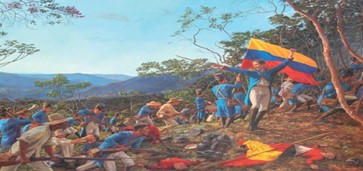
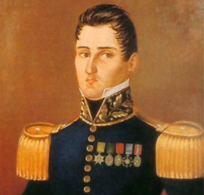
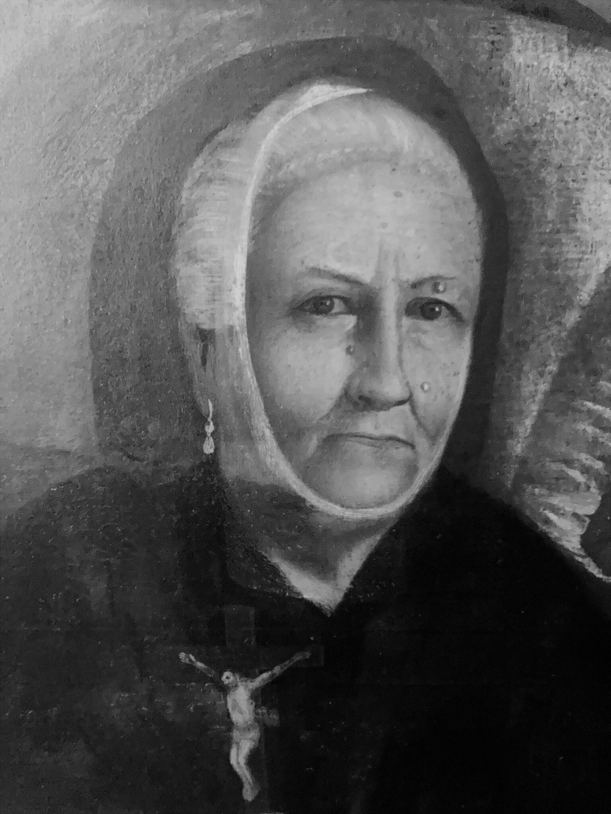

Antecedentes
- Economía local: Antioquia tenía una economía basada en la minería y agricultura, con una fuerte influencia de criollos emprendedores.
- Clamor de independencia: Las provincias estaban influenciadas por los eventos del 20 de julio y las ideas independentistas se propagaron rápidamente.
- Liderazgo regional: Antioquia tenía un movimiento organizado por líderes locales, buscando autonomía.

¿Por qué se celebra?
El 11 de agosto de 1813, Antioquia proclamó su independencia absoluta de España, marcando un hito en el proceso de emancipación regional.
Hechos destacados

- Declaración de independencia: En Medellín, la Junta Provincial proclamó su separación del dominio español.
- Consolidación militar: Las fuerzas locales comenzaron a organizarse para defender la independencia.
- Constitución: Se adoptaron principios republicanos para el gobierno de la provincia.
Personajes destacados
- José María Córdova: Aunque joven, sería un héroe clave en batallas posteriores.
- Francisco José de Caldas: Intelectual y estratega que apoyó la causa independentista.
- Juan del Corral: Redactó el acta de independencia y lideró la declaración.

Logros posteriores
- Antioquia se convirtió en un bastión de la independencia, sirviendo como apoyo logístico y militar.
- Se fortaleció la identidad regional, contribuyendo al éxito de la lucha por la libertad.
Mujeres destacadas
- Doña Javiera Londoño: No participó directamente, pero su legado en la educación y economía influyó en los movimientos independentistas.
- Mujeres rurales: Participaron como comunicadoras y proveedoras de recursos para las tropas.
